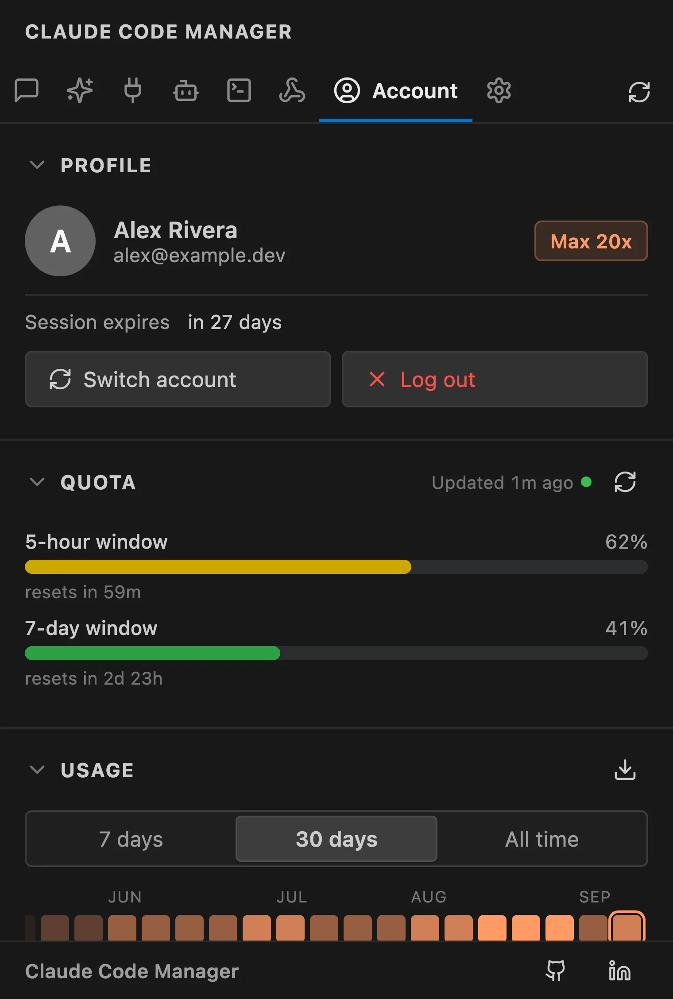
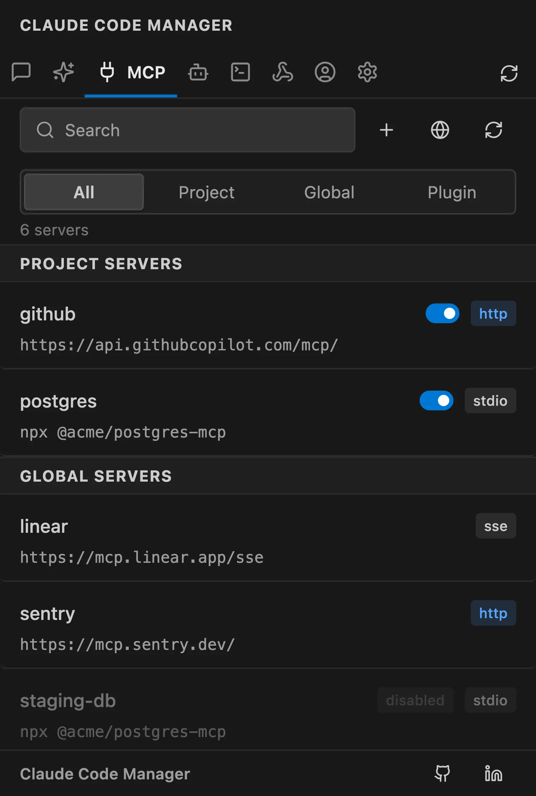
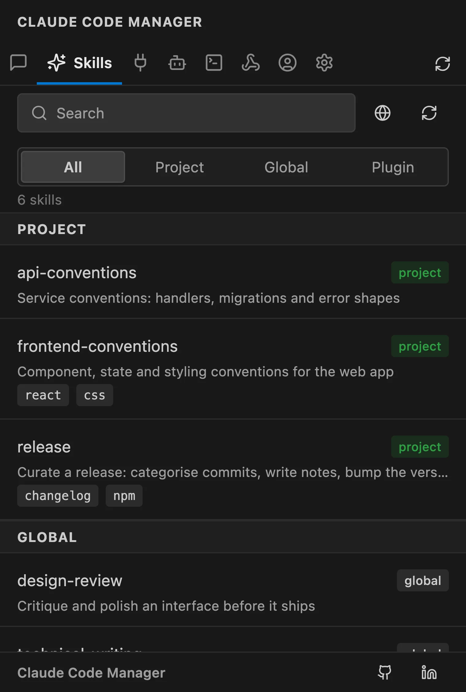
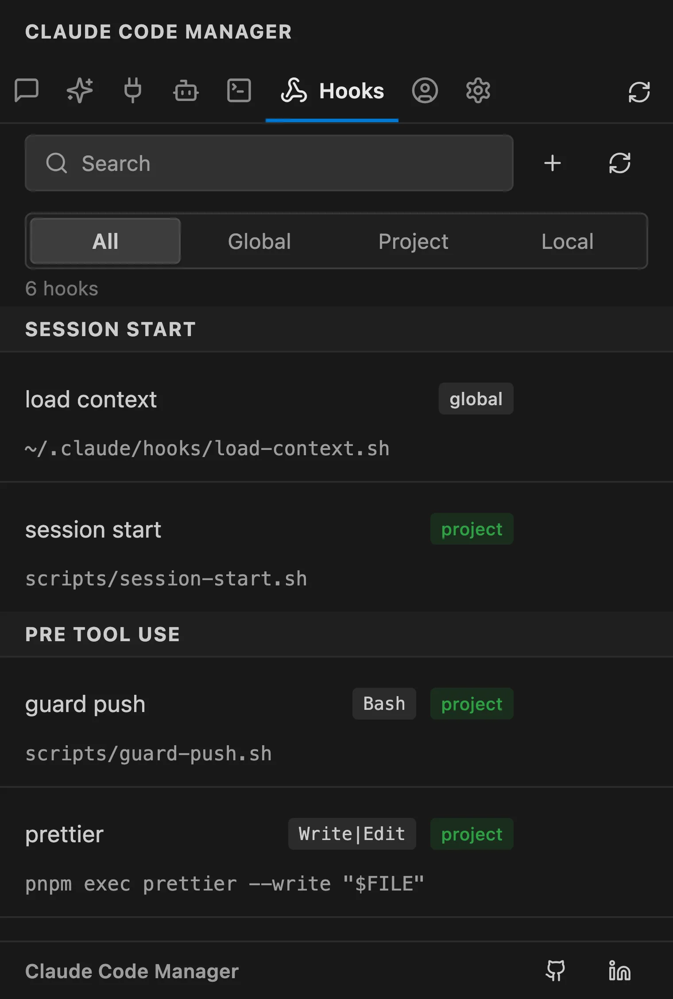
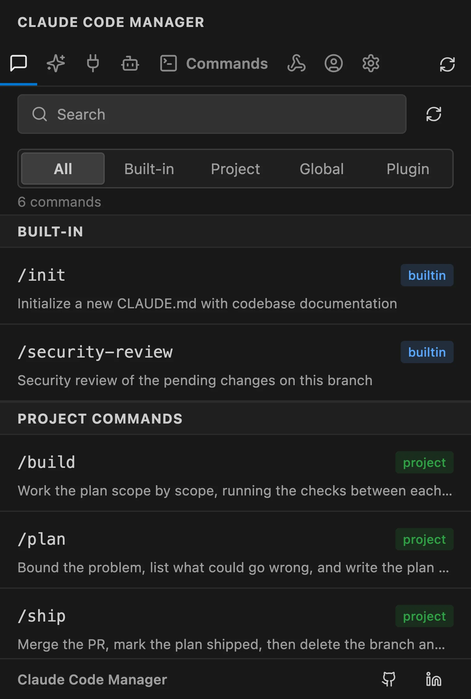
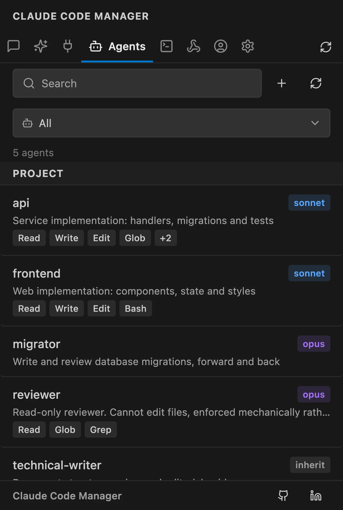
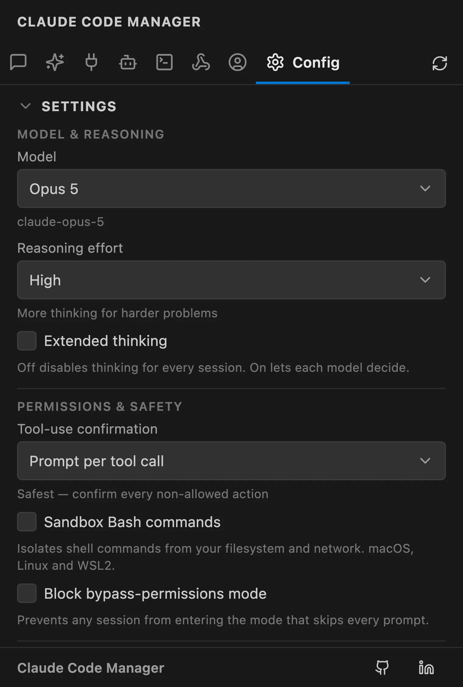

VS CodeCursorWindsurfAntigravityVSCodiumCodespacesGitpodTheia
THE SIDEBAR:
Eight surfaces. One sidebar.
Everything Claude Code keeps in ~/.claude/ — organized, searchable, clickable.
Sessions
Browse, search, and resume every past Claude Code session by project and git branch. Active sessions pin to the top with live status dots. Pin, rename, fork, import, export, or restore a whole workspace of terminals at once.
Full-text transcript search
Resume routes back to terminal or extension chat
Works with the CLI and the official extension
Account & Usage
Switch between Claude accounts without a full logout and login. Activity heatmap, token usage across 7-day, 30-day, and all-time, and opt-in quota bars showing your real 5-hour and 7-day subscription windows.
Multi-account profile switcher
Per-model, per-project, per-tool breakdowns
Opt-in quota card, refreshed only on click

MCP Servers
Enable, disable, delete, or inspect MCP servers with no JSON editing. API keys and secrets are masked automatically, and an auth-health banner surfaces connectors that need re-auth.
No hand-editing config files
Secrets masked automatically
Auth-health banner for stale connectors

Skills
Global, project, and plugin-shipped skills, each tagged with a scope badge. Copy, open, delete, or launch Claude with a skill in one click — in a terminal or the extension chat.
Scope badges: global / project / plugin
One-click launch into Claude Code
Browse community skills inline

Hooks
Inspect, toggle, edit, or remove automation hooks across global, project, and local scopes — with the full command shown before it runs.
Full command preview before it fires
Toggle without editing settings JSON
Global, project, and local scopes

Commands
Built-in slash commands plus your own from .claude/commands/ and installed plugins. Copy a command or launch it straight into Claude Code chat.
Built-in and custom commands together
One-click copy or launch
Plugin commands included

Agents
Browse project and plugin agents with Sonnet, Opus, and Haiku model badges and description previews — so you know what each agent is before you reach for it.
Sonnet / Opus / Haiku badges
Description previews
Project and plugin agents

Config
Tune Claude Code without hunting through settings files. Pick the model, set tool-use confirmation and reasoning effort, edit per-scope permissions, and roll back with settings-history snapshots.
Model, reasoning effort, and attribution
Per-scope allow / deny permissions editor
Settings snapshots with one-click restore

LOCAL-FIRST:
It reads your machine. It tells no one.
Zero telemetry
No analytics, no accounts, no background traffic. The extension reads ~/.claude/ and renders in a VS Code webview. Nothing is collected.
One opt-in call
The only network request is the Quota card, and only when you click Refresh — a single read of your own usage with your own token.
Open source
Apache 2.0, public on GitHub. Read every line, fork it, file an issue. The privacy claim is auditable, not a promise.
The terminal was never built for browsing.
Without
Scroll terminal history to find last week's session
Hand-patch JSON to add or disable an MCP server
/logout then /login to switch accounts
No idea what this month's tokens cost
With
Search by project and branch, click Resume
Toggle MCP servers with one click, secrets masked
Swap saved account profiles instantly
Usage by model, project, and tool
FAQ:
Questions, answered.
Does Claude Manager send anything to the network?
No. It is local-first by default — zero telemetry, zero accounts, no background traffic. The one opt-in exception is the Account tab's Quota card, which fetches your subscription usage with your own token only when you click Refresh.
Does it work with Cursor, Windsurf, and VSCodium?
Yes. It is a standard VS Code extension. Install from the Marketplace on VS Code, Cursor, Windsurf, and Antigravity, or from Open VSX on VSCodium, Theia, and Gitpod.
Can I switch between Claude accounts without logging out?
Yes. The Account tab includes a multi-account profile switcher that saves and swaps Claude logins without a full logout and login cycle.
Do I need Claude Code installed?
Yes — install Claude Code first. Either the CLI, the official VS Code extension, or both works. Claude Manager reads the shared ~/.claude/ directory, so sessions from either surface show up together.
Where does my data live?
In ~/.claude/ — the same place Claude Code itself uses. The extension never copies, uploads, or duplicates your sessions.
One sidebar. Everything Claude.
Join 23,627 developers. Free, open source, 100% local.